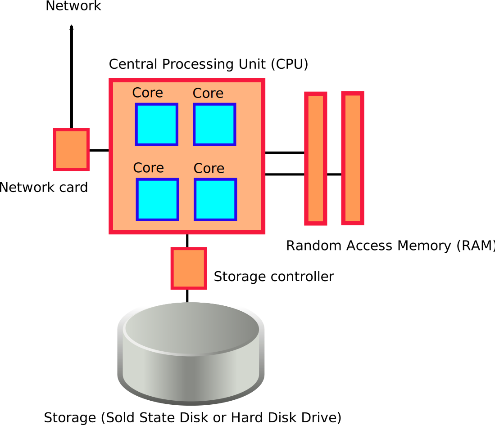

class: center, middle # Getting Started on Hamilton HPC Cluster *by Mark Dixon, Advanced Research Computing* --- What is Hamilton? How do I login to it? How do I --- # What is Hamilton? - Hamilton is a High Performance Computing (HPC) machine - "HPC" means it is suitable for large scale parallel calculations - making use of multiple CPU cores at the same time - CPU cores are the “brains” of a computer. One core can run one program at a time, more cores means you can run more programs at the same time - It is useful for running… - large numbers of programs using one core each - programs using many cores each - and everything in between. --- # What is Hamilton? - Hamilton is made up from many servers, each with multiple CPU cores and their own memory, called compute nodes - Non-specialist programs (e.g. serial or multi-threaded) can be run on Hamilton, but can only make use of the resources belonging to a single compute node - Multiple compute nodes are connected together via a high performance network - Specially-written programs can be used to make use of this, allowing a single calculation to be distributed across multiple compute nodes --- # What is Hamilton? Why would I use such a machine? - Impatience: - To make a calculation run more quickly - To run lots of calculations at the same time - Ambition: - To be able to tackle large problems that don’t fit inside the memory of a single computer --- # What is Hamilton?  --- # What is Hamilton? <img src="./test2.svg" width=70%>